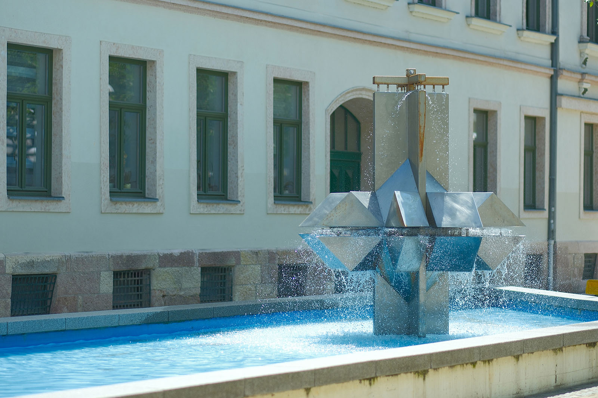
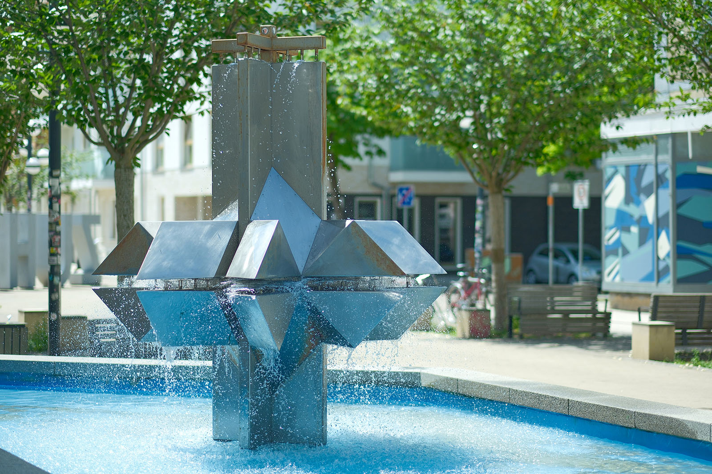
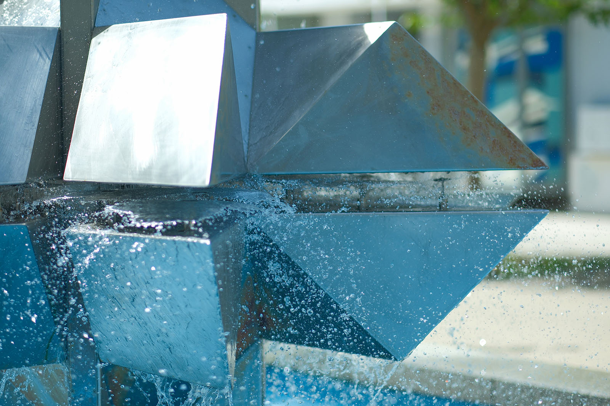
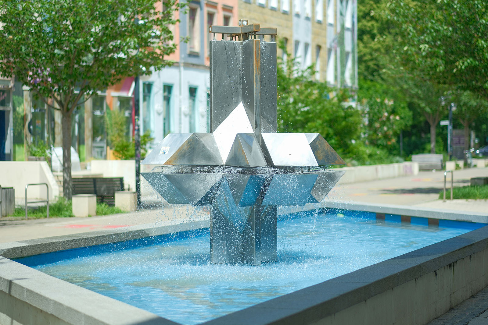

Recherche und Werkbeschreibung: Roman Pilz. Text und Fotografien wechseln sich wie in einem Magazin ab. Ein Klick auf ein Bild öffnet die Großansicht.
Das abstrakte "Wasserspiel" von Reinhard Grütz, einem Freund und Kollegen von Clauss Dietel, mit dem er gemeinsam einen Brunnen für das Yorkgebiet entwarf, wurde 1980 auf dem zum Fußgängerbereich umgestalteten Brühl eingeweiht.
Der Metallgestalter geht bei seinen Entwürfen meist von rechteckigen und dreieckigen Grundflächen aus, die dann zu räumlichen geometrischen Körpern "gefaltet" werden. Der symmetrische Körper der Brunnenplastik wird durch eine Stele mit schlanker, kreuzförmiger Grundfläche als zentraler Achse und daran strahlenartig ausblühenden Dreieckskörpern gebildet.
Reinhard Grütz wurde 1938 in Berghöfen (ehem. Ostpreußen, Kreis Labiau) geboren und verstarb 2022 in Darmstadt. Grütz floh mit seiner Familie nach dem Krieg nach Treffurt im Kreis Eisenach.
Nach seinem Abitur im Jahr 1958 absolvierte er ein einjähriges Praktikum in der Kunstschmiede von Günther Laufer in Eisenach. a. bei Lothar Zitzmann, Willi Sitte, Karl Müller, Wilhelm Nauhaus und Martin Keim.
Von 1964 bis 1966 arbeitete er als Designer am Institut für Textilmaschinen in Karl-Marx-Stadt (Chemnitz). Nach einem Fluchtversuch aus der DDR war der Künstler von 1966 bis 1968 in politischer Haft. Ab 1968 arbeitete Reinhard Grütz im heutigen Chemnitz als freiberuflicher Gestalter im Bereich Kunst und Design.
Ab 1971 bis zu seiner Ausreise und Ausbürgerung aus der DDR Ende 1981 war er Mitglied im Verband Bildender Künstler. Seit 1981 lebt und arbeitet der Künstler in Darmstadt, ab 1994 in Groß-Zimmern bei Darmstadt. Ab 1986 war Reinhard Grütz Mitglied im Bundesverband bildender Künstler Frankfurt/Main.
Sowohl in der DDR als auch später in Westdeutschland übernahm Grütz private und öffentliche Aufträge. Neben frühen Entwürfen für den Maschinenbau war Grütz in den 1970er Jahren an der Gestaltung des Yorkgebiets, des Wohngebiets "Fritz Heckert" und des Brühl-Boulevards beteiligt. Er gestaltete auch die Innenräume der Galerie "Oben" und der Produzentengaliere "CLARA MOSCH".
Er entwarf auch einen Raumtrenner für den Palast der Republik in Ost-Berlin. a. Arbeiten in Darmstadt, Basel, Langen, Duisburg, Baunatal, Savannah/Georgia (USA).
Gebrochene Symmetrien
Das „Dekorative Wasserspiel“ (1980) von Reinhard Grütz am Brühl
Der kreuzförmige, aus langgezogenen rechteckigen Flächen bestehende Körper öffnet seine acht Innenseiten in Richtung des Straßenverlaufs und der Häuserfronten. Dort, etwas unterhalb der Säulenmitte, ragen die horizontal durch eine schmale Öffnung für den Wasserauslauf zerschnittenen Volumen in den Raum über dem viereckigen, parallelogrammförmigen Wasserbecken. Die aus einem großen innenliegenden und zwei halbgroßen, außenliegenden Dreiecken konstruierten Körper doppeln sich entlang der Schnittebene – sie verjüngen sich jeweils nach oben und nach unten.
Oben an der Spitze ist auch das Kreuz für einen zweiten Wasserauslass durchbrochen. Das Wasser sprüht breit gefächert und in großen Tropfen aus mehreren Ventilen. Die glatten Edelstahlflächen kontrastieren mit der wilden Unordnung des nassen Elements. Ist das Wasserspiel nicht im Betrieb, spiegelt sich die Form des Brunnens über der niedrigen Wasserfläche und verdoppelt sich gleichmäßig im Wasser.
Die ursprüngliche Brunnenanlage auf dem Brühl bestand aus insgesamt drei Becken mit weiteren Wasserfontänen und einem zweiten Brunnen mit Fontänen und Wasserfall auf der gegenüberliegenden Straßeneinfassung. Das Becken wurde 2018 vollkommen erneuert und wieder mit der Plastik von Reinhard Grütz ausgestattet. Früher befand sich ein weiterer Brunnen mit sprudelndem Stein auch am anderen Ende des Brühl-Boulevards, auf der anderen Seite der Georgstraße, neben der Kaufhalle.
Der Künstler, der 1981 aus der DDR ausreiste, war Ende der 1970er Jahre an weiteren wichtigen Aufträgen in Chemnitz beteiligt. Ein ähnlich gestalteter, kleinerer Brunnen befindet sich z.B. im Pausenhof der ehemaligen Gießerei „Rudolf Harlaß“ in Wittgensdorf (heute Sachsen Guss). Das gesamte Neubauprojekt der Gießerei gilt als ein herausragendes Beispiel für die künstlerische Gestaltung von Arbeitsstätten in der DDR. Das Künstlerkollektiv wurde von Clauss Dietel geleitet – eine große, in Industrieemaille ausgeführte Malerei von Michael Morgner schmückt die Fassade des Hauptgebäudes.

Reinhard Grütz wurde 1938 in Berghöfen (ehem. Ostpreußen, Kreis Labiau) geboren und verstarb 2022 in Darmstadt. Grütz floh mit seiner Familie nach dem Krieg nach Treffurt im Kreis Eisenach.
Nach seinem Abitur im Jahr 1958 absolvierte er ein einjähriges Praktikum in der Kunstschmiede von Günther Laufer in Eisenach. a. bei Lothar Zitzmann, Willi Sitte, Karl Müller, Wilhelm Nauhaus und Martin Keim.
Von 1964 bis 1966 arbeitete er als Designer am Institut für Textilmaschinen in Karl-Marx-Stadt (Chemnitz). Nach einem Fluchtversuch aus der DDR war der Künstler von 1966 bis 1968 in politischer Haft. Ab 1968 arbeitete Reinhard Grütz im heutigen Chemnitz als freiberuflicher Gestalter im Bereich Kunst und Design.
Ab 1971 bis zu seiner Ausreise und Ausbürgerung aus der DDR Ende 1981 war er Mitglied im Verband Bildender Künstler. Seit 1981 lebt und arbeitet der Künstler in Darmstadt, ab 1994 in Groß-Zimmern bei Darmstadt. Ab 1986 war Reinhard Grütz Mitglied im Bundesverband bildender Künstler Frankfurt/Main.

Sowohl in der DDR als auch später in Westdeutschland übernahm Grütz private und öffentliche Aufträge. Neben frühen Entwürfen für den Maschinenbau war Grütz in den 1970er Jahren an der Gestaltung des Yorkgebiets, des Wohngebiets "Fritz Heckert" und des Brühl-Boulevards beteiligt. Er gestaltete auch die Innenräume der Galerie "Oben" und der Produzentengaliere "CLARA MOSCH".
Er entwarf auch einen Raumtrenner für den Palast der Republik in Ost-Berlin. a. Arbeiten in Darmstadt, Basel, Langen, Duisburg, Baunatal, Savannah/Georgia (USA).

Gebrochene Symmetrien
Das „Dekorative Wasserspiel“ (1980) von Reinhard Grütz am Brühl
